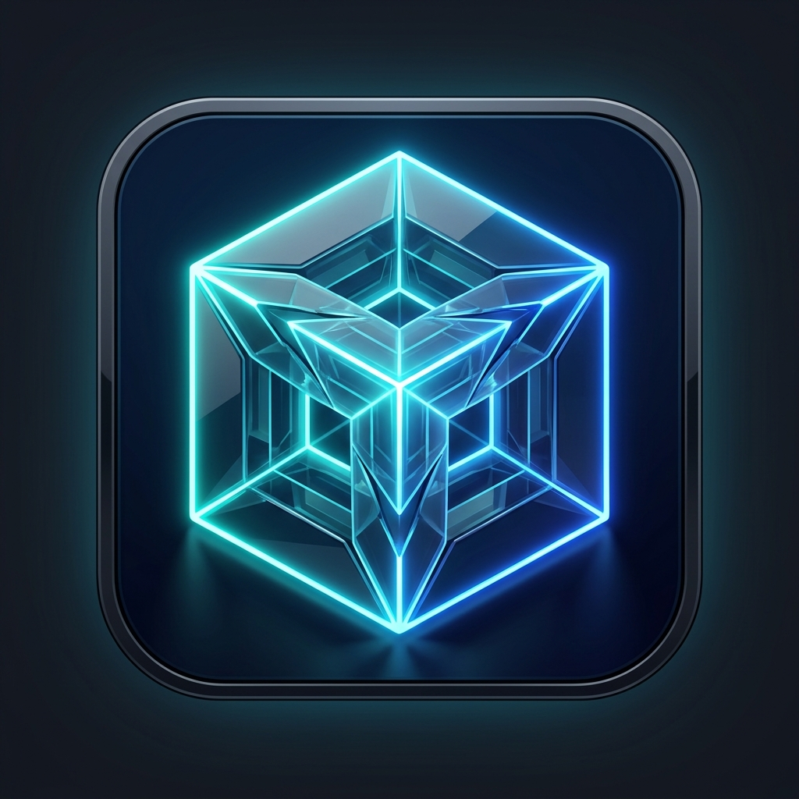

拖拽视频文件至此，或 点击浏览文件
支持一次性选择或拖拽多个视频 · 兼容 MKV, MP4, TS, AVI, MOV 等主流格式
转码执行器当前空闲，随时可提交新任务
系统支持多显卡服务器与 Windows/macOS/Linux 原生平台切换。选定设备将持久化并在后续转码中生效。
选择喜爱的色彩风格，点击立即生效并自动保存：
原片压缩完毕后物理删除上传的源视频，极大节约 USB 硬盘空间
视频文件超过此门限时自动切分 20MB 分片流式上传并支持断点重试；小于此门限则走高速单次上传。
当客户端上传大文件发生网络中断、或数据库任务被删除时，磁盘中可能遗留未关联的临时分片或源视频。 本功能将对照数据库索引精准扫描挂载目录，并在管理员确认后物理释放无效占用的磁盘空间。
仅清理脱离任务数据库管理的孤立数据
SlimBox 支持轻量 API Key 鉴权。配置密钥后所有转码、预设与管理接口将受到鉴权保护。
🔒 遵循安全规范：完整 API Key 仅在初次生成时展示一次。若密钥遗失请撤回并重新生成。
自定义该档位参数后将自动写入 SQLite 数据库，今后提交任务将长期复用：
检测到系统已开启安全模式且未设密码。请输入容器控制台输出的 6 位 PIN 码并设置管理员主密码：
当前系统已开启安全保护，请输入管理员密码以进入控制台：
💡 提示：若使用 API Key，也可直接在此输入；若忘记密码可在服务器执行 slimbox-cli admin reset-password <新密码> 快速重置。
slimbox-cli admin reset-password <新密码>
⚠️ 请立即复制并妥善保存此密钥，关闭后将不再显示完整明文：
sb_...
选择您的主机架构，点击下方按钮直接下载到本机：
curl -O ...
push
将待压缩文件逐个流式上传至服务端排队。上传入队完毕后 CLI 将自动退出，此时您的客户主机可关机或睡眠，SlimBox 独立串行压制：
.\slimbox-cli.exe push -s "{SERVER_URL}" -p 720p "D:\Videos\ep01.mp4" "D:\Videos\ep02.mkv"
-f
.\slimbox-cli.exe push -s "{SERVER_URL}" -p 1080p -f "D:\my_series.txt"
.\slimbox-cli.exe push -s "{SERVER_URL}" -p 720p --crf 26 --codec libx265 -f list.txt
无需常驻浏览器，在终端随时掌握转码进度、排队顺序，并可精准干预任务：
task-id
.\slimbox-cli.exe status -s "{SERVER_URL}"
abort
.\slimbox-cli.exe abort -s "{SERVER_URL}" <task-id>
retry
.\slimbox-cli.exe retry -s "{SERVER_URL}" <task-id>
top
bottom
.\slimbox-cli.exe top -s "{SERVER_URL}" <task-id>
pull
任意时刻（如次日开机）执行拉取命令，将所有已完成的视频批量拉取至本地；加上 --clean 可在下载成功后自动清理服务端原片与成品：
--clean
.\slimbox-cli.exe pull -s "{SERVER_URL}" -o "D:\Compressed" --clean